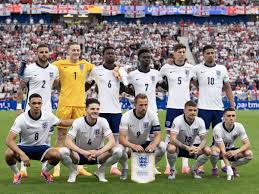
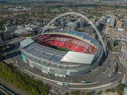
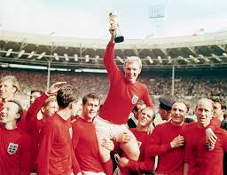
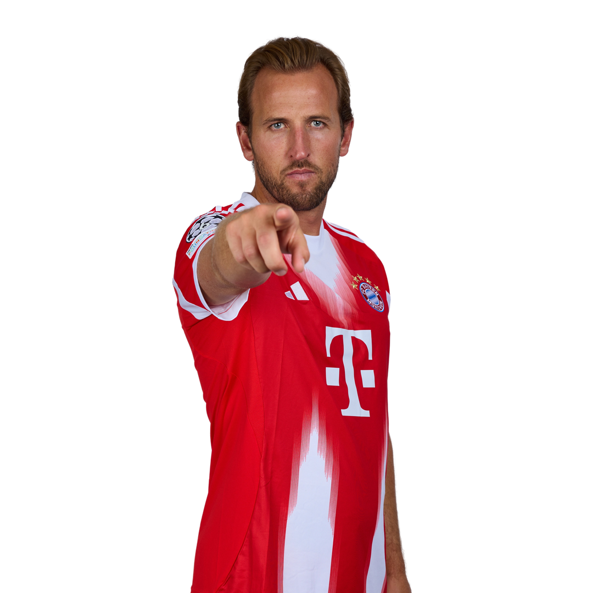
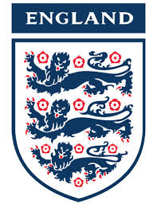

Orgulho e tradição dos Três Leões
A Seleção da Inglaterra é uma das mais tradicionais do futebol mundial. Representa os Três Leões e é administrada pela Football Association (FA). Conquistou a Copa do Mundo de 1966 e segue sendo uma potência europeia.

Inglaterra vs Alemanha
Sábado, 12 de Junho — Wembley Stadium


Alguns dos principais nomes da atual seleção:

• A Inglaterra foi a primeira seleção a disputar uma partida oficial em 1872 contra a Escócia.
• O estádio Wembley é considerado a “catedral do futebol”.
• O apelido “Three Lions” vem do brasão histórico da Inglaterra.
